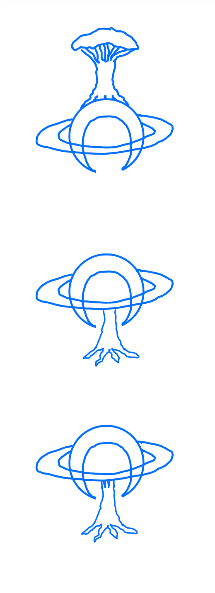
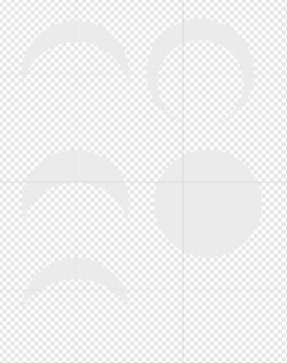
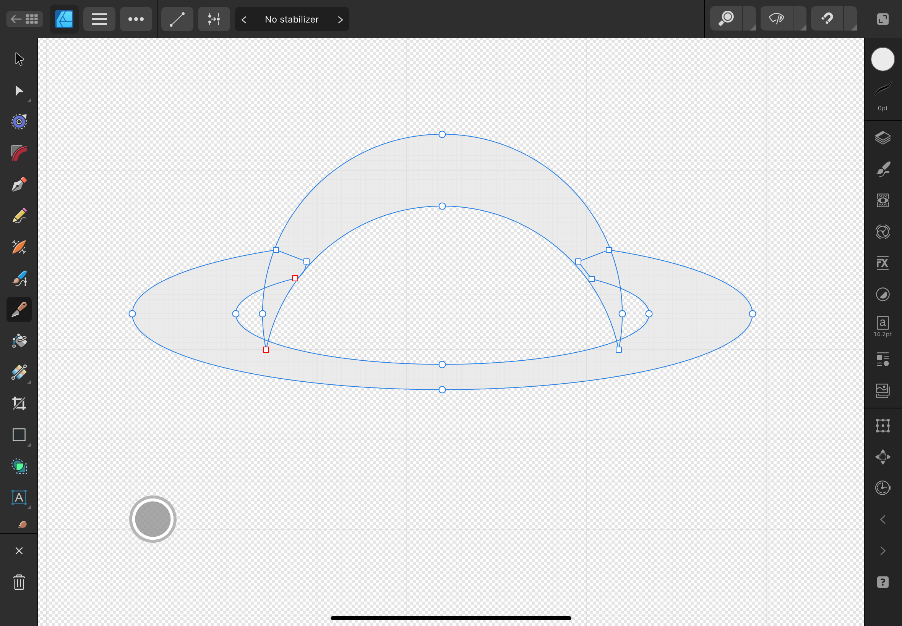
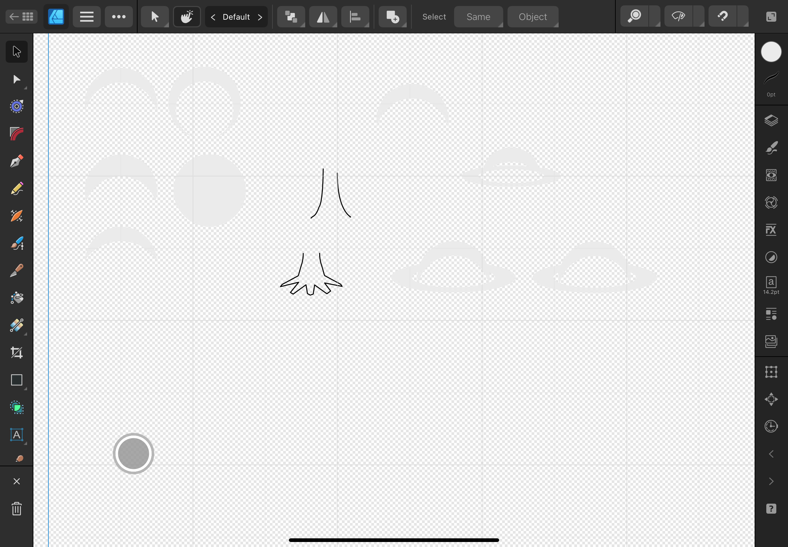
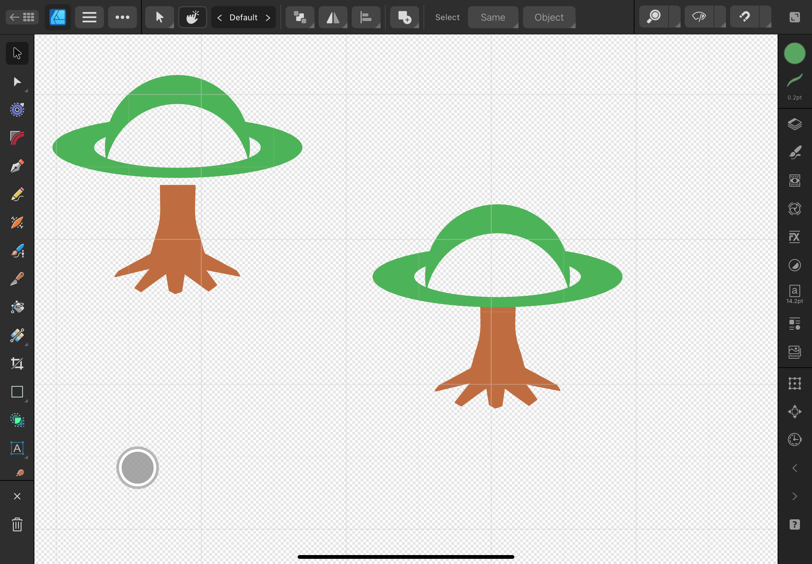
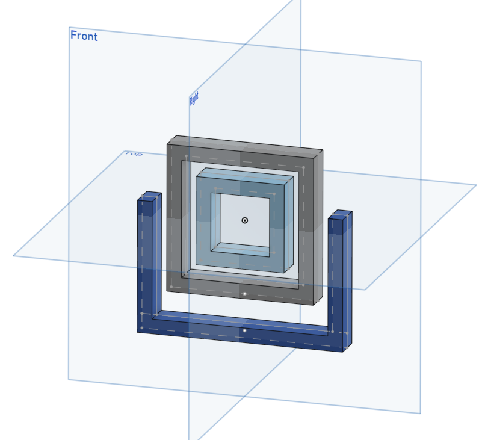
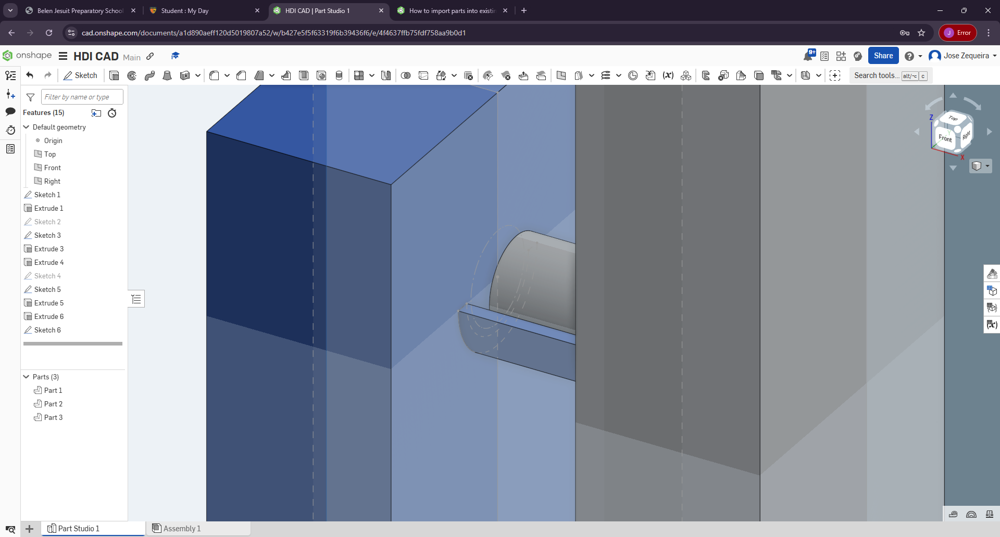
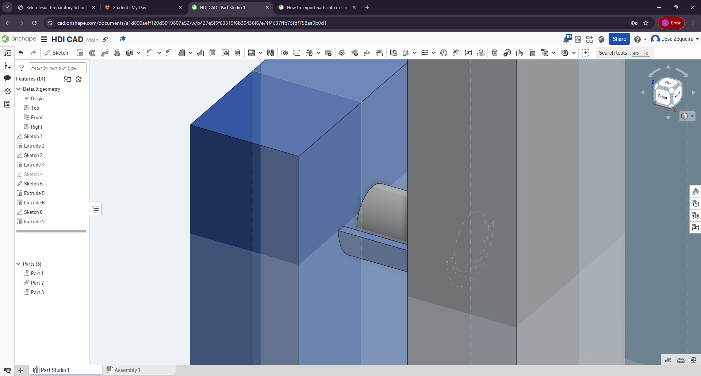
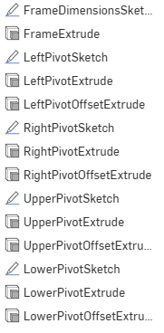

Final Project
2D Design
I was tasked with creating a logo for our project's makeshift company in this assignment. Since most students did not have access to the school computers outside of class time, many, including me, took Mr. Perez's advice in downloading Affinity Design, a 2D CAD program available on both iPads and computers. I started to sketch out and brainstorm the design on Notability, an iPad app, and gave the three candedates to others for feedback, from which I decided to do the second.

In Affinity, I decided to create multiple designs for the top half of the planet to see which one would look better.

I created these shapes by making two identical circles, offsetting one slightly in the Y-direction, and pressing the subtract option in the menu.
I created the second ellipse by making a donut shape from the shapes tool, flattening it, and shortening the arc by pulling on a red dot on its surface. When I got the right width, I lined them both up, selected both, pressed the menu button, and selected convert to curves. When I was done, I closed off the ends of the donut ellipse and grouped the two shapes so they could act similar to how one shape would.

After a lot of testing and YouTube tutorials, I had the planet part of the logo ready. For the tree part, I used the pen tool to tap out straight lines and drag out curved ones to resemble a trunk the planet would attach to.

All that was left to do for the logo was to color the trunk and planet, group them, and duplicate them to another sketch. There, the logo would be exported as an SVG file, or a vector file, so it would not lose quality after compression and decompression.

3D Design
Now, we were tasked with creating an extremely basic 3D prototype of our final product. I initially wanted to make something simple that was scalable to fit the lighting panels. For this project, I used OnShape for its ability to be shared with others easily. I needed this trait because very few computers in Belen have access to the slicer programs, so, if needed, I could ask my teacher to print it for me by sharing the document with his email.

For this rough model, I made the frames squares to easily fit multiple panels. Starting with a sketch on the front layer, I traced out the dimensions and thickness of the frames, and them extruded them to equal distances.

To allow the clinostat to spin, I created a pivot point on the left and right between the outer frame and stand, as seen below, and on the top and bottom between the outer and inner frames.

To reduce the total amount of features in the OnShape document, I chahnged up the pivot point, making both extrusions come from the same side by using one side with extrude offsets to create the inner, gray tube.

This OnShape document still was not finished, as the features were a mess to read. I began by organizing features by name and location to organize the document.
